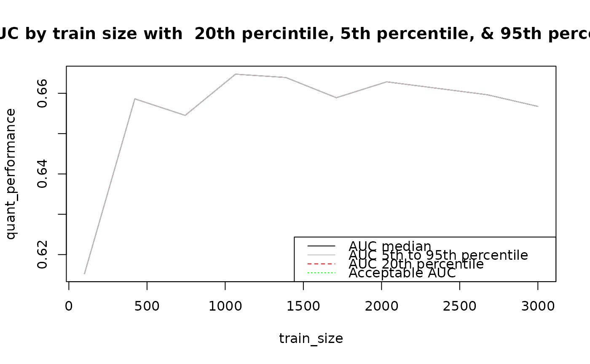

calculate_sample_size.RdCalculate the minimum sample size required to develop a prediction model
calculate_sample_size(
data_generating_function,
model_function,
performance_function,
target_performance,
test_n,
tune_param,
min_sample_size,
max_sample_size,
n_reps,
n_sample_sizes = 10
)A function of two parameters, n and a tuning parameter, that returns data for the model function
A function which takes the object returned by the data generating function and fits the analysis model of interest.
A function which takes a a test dataset and model object as argments and returns a performance metric
The desired performance of the prediction model
The sample size used for testing model performance
A tuning parameter to be passed to the data generating function
The minimum sample size used in simualations
The maximum sample size used in simulations
The number of simualtion reps
The number of different sample sizes simulations are carried out at
A list of results form the simulation
library(pROC)
#> Type 'citation("pROC")' for a citation.
#>
#> Attaching package: ‘pROC’
#> The following objects are masked from ‘package:stats’:
#>
#> cov, smooth, var
generate_data <- function(n, beta_signal) {
p_signal <- 10 # number of predictors
prob_p <- 0.1 # probability of a predictor to be 1
base_prev <- 0.3 # baseline probability of a positive outcome
alldata <- rbinom(n * p_signal, 1, prob_p)
X <- matrix(alldata, nrow = n, ncol = p_signal)
W_ <- rep(beta_signal, p_signal)
b0 <- log(base_prev / (1 - base_prev))
lp <- X %*% W_ + b0
y_prob <- 1 / (1 + exp(-lp))
# generate outcome
y <- rbinom(n, 1, y_prob)
data <- cbind(y, X) |> data.frame()
x_names <- paste0("x", 1:(ncol(data) - 1))
data_names <- c("y", x_names)
colnames(data) <- data_names
return(data)
}
fit_model <- function(data) {
logistic_model <- glm("y ~ .", data = data, family = "binomial")
}
# Get performance must be a function of data and a model object
get_performance <- function(data, model) {
y <- data[, 1]
x <- data[, -1]
y_hat <- predict(model, x, type = "response")
auc <- pROC::auc(y, as.numeric(y_hat), quiet = TRUE)
return(auc[1])
}
calculate_sample_size(
data_generating_function = generate_data,
model_function = fit_model,
performance_function = get_performance,
target_performance = 0.75,
test_n = 10000,
tune_param = 0.7,
min_sample_size = 100,
max_sample_size = 3000,
n_reps = 10,
n_sample_sizes = 10
)

#> $min_n
#> [1] NA
#>
#> $target
#> [1] 0.75
#>
#> $summaries
#> median_performance quant20_performance quant5_performance
#> 100 0.6152626 0.6152626 0.6152626
#> 422 0.6586153 0.6586153 0.6586153
#> 744 0.6545186 0.6545186 0.6545186
#> 1066 0.6647415 0.6647415 0.6647415
#> 1388 0.6639109 0.6639109 0.6639109
#> 1711 0.6589004 0.6589004 0.6589004
#> 2033 0.6628372 0.6628372 0.6628372
#> 2355 0.6612431 0.6612431 0.6612431
#> 2677 0.6596306 0.6596306 0.6596306
#> 3000 0.6567439 0.6567439 0.6567439
#> quant95_performance
#> 100 0.6152626
#> 422 0.6586153
#> 744 0.6545186
#> 1066 0.6647415
#> 1388 0.6639109
#> 1711 0.6589004
#> 2033 0.6628372
#> 2355 0.6612431
#> 2677 0.6596306
#> 3000 0.6567439
#>
#> $data
#> [,1]
#> 100 0.6152626
#> 422 0.6586153
#> 744 0.6545186
#> 1066 0.6647415
#> 1388 0.6639109
#> 1711 0.6589004
#> 2033 0.6628372
#> 2355 0.6612431
#> 2677 0.6596306
#> 3000 0.6567439
#>
#> $train_size
#> [1] 100 422 744 1066 1388 1711 2033 2355 2677 3000
#>